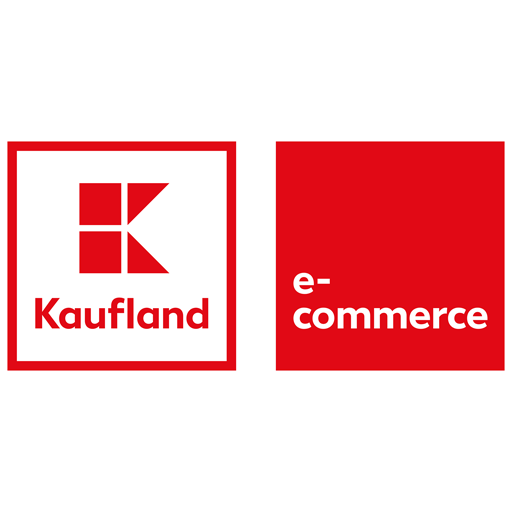

| Company/Institute | Position (From-To) |
Job Description | Concepts & Technologies |
|---|---|---|---|

|
Senior Data Scientist (Apr 2023-ongoing) |
• Build machine learning pipelines and end-to-end data-driven applications.
• Generate predictive models to drive insights on business decision making and performance optimization. • Create smart solutions for better customer targeting. |
MLOps, GCP, Machine Learning, Python, Airflow, Predictive Analytics, MlFlow, Tensorflow. |
|
|
Data Scientist (Jan 2022-Mar 2023) |
• Developed a predictive modelling application, which sorts leads by quality and conversion probability, for faster customer acquisition.
• Built a geo-targeting algorithm, which helped to increase the weekly conversion rate of Appointments to Qualified Leads at a maximum target of 66%. • Assisted in creating an algorithm for better marketing budget allocation. |
MLOps, GCP, Python, R, Customer Segmentation, Predictive Analytics, MlFlow, Marketing Mix Modelling. |
|  | Data Scientist (Oct 2018-Dec 2021) |
• Developed a predictive modeling application, which reduced Cost to Sales Ratio by 4% in one of the most important marketing channels.
• Built a new version of the Similar Product Recommender, which increased Click Through Rate by 5%. • Established a system which deals with fake review & product detection. |
Machine Learning, Recommendation Systems, Kubernetes, Helm, Docker, Python, Tensorflow, Keras, DataDog. |

|
Master Thesis Student (Mar 2018-Aug 2018) | • Topic: Conceptualization and Development of a Predictive Big Data Streaming Application in the Context of Automotive Manufacturing. | Lambda Architecture, Batch/Stream Processing, Spark (SQL, ML, Streaming), RabbitMQ, Python. |
|
|
Data Science Intern (Oct 2017-Feb 2018) |
• Optimized riveting process by building an internal software using big data analytics, predictive modelling, and streaming applications. |
Big Data, Data Lake, Smart Factories, RabbitMQ, Spark, Python, R, Tableau. |

|
Forensic Analyst Intern (Apr 2017-Jul 2017) | • Assisted in projects concerning computer forensics, e-discovery, predictive data analysis and fraud detection. | Relational Databases, Structured Data, ERP System, Java, Microsoft SQL, QlikView, SAP. |

|
Teaching Assistant (Nov 2016-Feb 2017) | • Prepared learning materials and exercises related to biomedical ontologies, RDF data models, and SPARQL query language. | Web Semantics, OWL ontologies, RDF, SPARQL query language, BIO2RDF. |